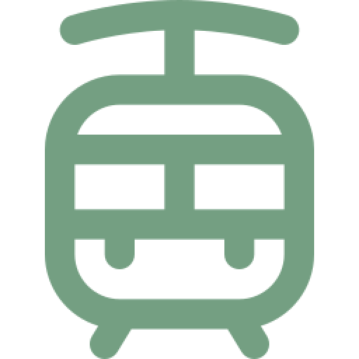

기차를 타고
청량리역동화역차량(5분거리)
청량리역만종역시내버스
부산,강릉,제천역동화역차량(5분거리)
부산,강릉,제천역만종역시내버스
고속버스를 타고
원주고속터미널52/57/58번 버스곤충마을
원주고속터미널택시곤충마을(20분거리)
자동차를 타고
서울,경기광주원주고속도로서원주ic간현관광지방향
춘천,횡성중앙고속도로광주원주고속도로서원주ic간현관광지방향
대전,청주경부고속도로중부고속도로영동고속도로문막ic원주방향 간현관광지방향
강릉영동고속도로문막ic원주방향간현관광지방향
원주단계동문막방향간현관광지방향
· 숙박시설
우리 숙소는 최대 4~60명의 인원을 수용할 수 있어,
넓고 쾌적한 환경에서 편안하게 휴식을 취할 수 있습니다.
· 강당
날씨에 제한되지않고 안전하게 체험가능한
원주 곤충마을 대강당에서 즐거운 시간을 만들어요!
· 곤충 체험관
야외 체험관과 실내 체험관으로 나누어져있어
다양하고 재미있는 곤충들을 관찰하며 곤충과의 유대감을 쌓아요!
· 낙농 체험장
곤충 뿐만아니라 염소목장에서 염소 친구들과 놀고,
염소우유로 치즈도 만들고 곤충요리도 만들어 봐요!
· 식곤충 체집영역
시에서 허가받은 곤충박물관만의 체집영역에서
모든 생물의 시작인 자연에서 식물과 곤충을 체집해봐요!